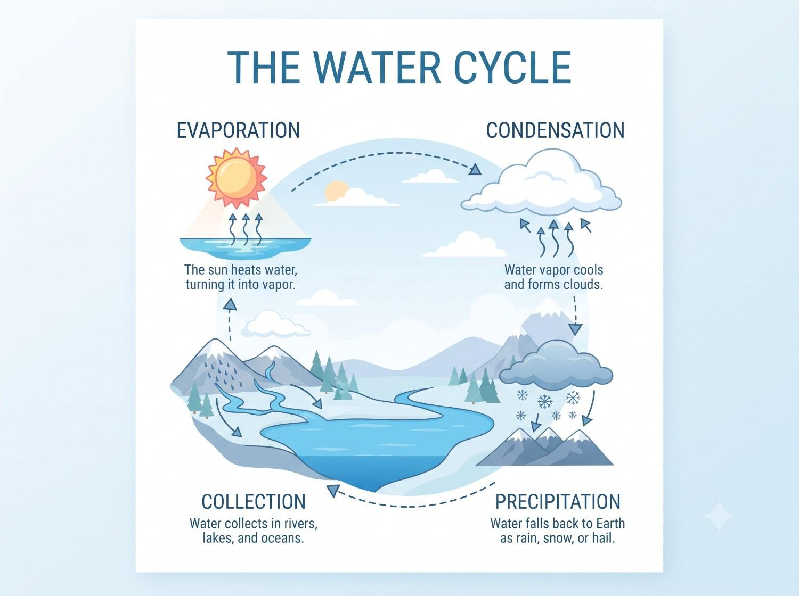

Infographic design prompt
Infographic poster
Generate a clean educational poster with a clear sequence, concise labels, and an easy-to-scan layout.

Copy this prompt
Design a clean educational poster titled 'The Water Cycle' with crisp, legible headline text. Include four labeled stages — evaporation, condensation, precipitation, collection — each with a small illustrated icon and one short caption line. Soft blue-and-white palette, generous whitespace, flat modern illustration style.
How to use it
- Replace the topic and steps with the information your poster should teach.
- Keep captions short and specify the audience or grade level.
- Check all generated text for accuracy and legibility before sharing.